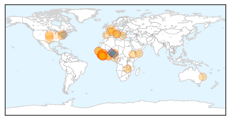
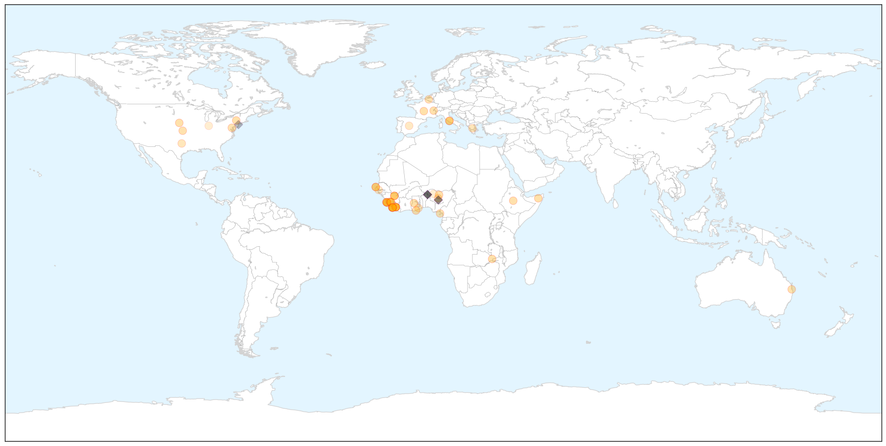
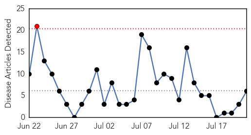

Ebola
30-Day Web Trend
2 alerts, 0 warnings

30-Day Twitter Trend
2 alerts, 0 warnings

Article Locations

X

Article Confidences

Top Articles:
- 1.000
- Can aerosolized vaccine protect primates against Ebola?
- 1.000
- Ebola virus still alive in Africa
- 0.999
- UNMC College of Public Health dean returns to Sierra Leone for four-week stint
- 0.999
- Africa’s Ebola epidemic has not run its course and around 30 people are still getting infected each week, says the UN special envoy for the disease « Awoko Newspaper
- 0.998
- Zambia National Broadcasting Corporation
- 0.998
- Ebola : Last four Liberian patients discharged
- 0.998
- Ebola-hit Liberia discharges four virus survivors
- 0.998
- Ebola Virus Disease Not Yet Defeated in West Africa
- 0.998
- Ebola threat not over yet, survivor Kent Brantly says
- 0.997
- Ebola deaths are still happening – and the Vatican is aiming to stop them
- 0.997
- World Bank Group President Jim Yong Kim to visit Ghana for talks on the global response to the Ebola crisis
- 0.997
- 7 Ebola Cases In Brong Ahafo Negative
- 0.997
- Ebola deaths are still happening – and the Vatican is aiming to stop them
- 0.996
- Experimental Ebola drug shelved; study explores virus clearance
- 0.996
- UNMC Public Health Dean Back in Sierra Leone for Ebola Work
- 0.995
- Last four Liberian Ebola patients discharged
- 0.991
- Nigeria pledges $1m to support Africa's fund on recovery, reconstruction after Ebola
- 0.990
- UN needs US$20 million to battle bird flu in West Africa
- 0.988
- IOM, Partners Assess Efforts to Combat New Ebola Cases in Sierra Leone
- 0.986
- Sierra Leone envoys in Makkah pray for Ebola eradication
- 0.985
- IOM, Partners Assess Efforts to Combat New Ebola Cases in Sierra Leone
- 0.982
- IOM, Partners Assess Efforts to Combat New Ebola Cases in Sierra Leone
- 0.976
- The New Dawn Liberia
- 0.973
- 14 lessons to prepare for future health emergencies from AU Support to the Ebola Outbreak in West Africa - Sierra Leone
- 0.961
- Viruses that spread from animals to humans are on the rise, so what are they and how can scientists stop them?
- 0.958
- ACT Alliance Appeal: Post-Ebola Recovery Program in Liberia – LBR151 (Re-Issued) - Liberia
- 0.954
- Ebola Doctor and Survivor Recounts His Battle in New Book
- 0.935
- Modern Healthcare Modern Healthcare business news, research, data and events
- 0.930
- Nigeria backs establishment of African Centre for Disease Control
- 0.916
- Port Health Service intensifies Ebola surveillance
- 0.907
- Ebola survivor Dr. Kent Brantly: Why my family and I returned to Liberia
- 0.905
- Sharing knowledge to combat emerging threats
- 0.900
- After Ebola and War: Electricity for Sierra Leone
- 0.842
- Nigeria to back setting up of African disease control centre
- 0.817
- Visitor from Africa sent to Bellevue in Ebola scare
- 0.808
- Brantlys navigate a vastly changed
- 0.806
- Texas couple navigate a vastly changed life
- 0.805
- After Ebola, the Brantlys navigate a very different life
- 0.792
- H.E. Koroma Zooms to One Day Ebola Summit
- 0.780
- Japanese Government presents Ebola prevention equipment to Ghana
- 0.703
- AU Stresses Coordination In Ebola Fight, Discusses With Stakeholders
- 0.702
- Equatorial Guinea hosts international conference on Ebola
- 0.678
- Quarantined ODCH Doctors, Nurses and Lab. Technicians in High Spirit
- 0.676
- Sierra Leone is in a much better shape to deal with Ebola - Sierra Leone
- 0.668
- The plight of African migrants in the Mediterranean
- 0.541
- After Ebola, the Brantlys navigate a very different life
- 0.527
- Why Africa is facing a new healthcare crisis
Top Tweets:
- 0.883
- RT: 211 personnel from Nigeria were part of the Africa Union Support to the Ebola Outbreak in West Africa says. @EbolaA…
- 0.822
- int'l conference on the fight against Ebola in Africa kicked off yesterday in Malabo Africaagainstebola Ebola
- 0.807
- The Ebola outbreak isn't over; as says the final leg "requires the most meticulous work of all". We're still covering the outbreak.
- 0.803
- Together we can defeat Ebola Africaagainstebola
- 0.756
- Ebola Doctor Recounts His Battle with the Virus in New Book | TIME - TIME http://t.co/IbBkqSvzdR ebola EVD
- 0.743
- Liberia: Ebola Patients Discharged Last of the Country's Latest Wave - New York Times http://t.co/fQFiJPmJgc ebola EVD
- 0.678
- LISTEN: More on a damning report served on the World Health Organisation after its failings over the ebola outbreak. http://t.co/ympOk15OW0
- 0.675
- FAQ. Ebola virus disease http://t.co/sCPaayp0hs
- 0.590
- Morning Break: Ebola Contained in Liberia 'Valley of Death' Penile Looks ... - MedPage Today http://t.co/nHEs0X9aTg ebola EVD
- 0.588
- Canadian Medical Association Journal: Ebola needed better coordinated Canadian ... - CMAJ http://t.co/NU9ISeTCMT ebola EVD
- 0.582
- RT: Ebola cases by month. July just surpassed May's total; Guinea=June closing on May and SierraLeone surpasses May. http://t…
- 0.577
- 14 lessons to prepare for future health emergencies from AU Support to the Ebola Outbreak @_AfricanUnion http://t.co/rFNT7wC70z
- 0.570
- Feverish Traveler Recently Back to NYC from Guinea Does Not Have Ebola ... - NBC New York http://t.co/5irtnZwXQN ebola EVD
- 0.551
- Ebola diaries: Lessons from previous Ebola outbreaks help with the response in Guinea http://t.co/B9ENsG32xE
- 0.549
- Health-care worker mortality and the legacy of the Ebola epidemic @thelancet http://t.co/3So0eCdHT4
- 0.546
- UNMC public health dean back in Sierra Leone for Ebola work - http://t.co/2hecsKxOCo ... - Scottsbl... http://t.co/zacqaYwFMp ebola EVD
Cholera
30-Day Web Trend
1 alerts, 0 warnings

30-Day Twitter Trend
4 alerts, 0 warnings

Article Locations


Article Confidences

Top Articles:
- 0.984
- South Sudan: Cholera outbreak kills dozens as fears of epidemic spread in conflict-riven nation
- 0.979
- UN relief chief heads to South Sudan to bolster humanitarian response as country's challenges mount
- 0.937
- Over 1,000 cholera cases reported in South Sudan: WHO
- 0.680
- Camp for Burundi refugees at breaking point'
- 0.665
- Tanzania: Camp for Burundi refugees ‘at breaking point'
- 0.628
- Influx of Burundi Refugees Bloats Nyarugusu Camp
Top Tweets:
- 0.945
- RT: At UN briefs ECOSOC on Haiti cites “presence of cholera & spike in cases” doesn't say UN brought cholera …